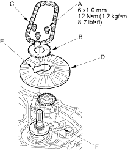
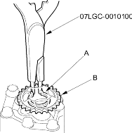
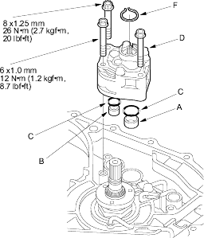

Snap ring pliers, 07LGC-0010100
- Remove the ATF pump drive sprocket bolts (A) and remove the ATF pump drive sprocket (B) and ATF pump drive chain (C).

- Move the pitot flange (D) toward its cutout (E) to clear the pitot pipe (F) under the pitot flange and remove the pitot flange.
- Expand the snap ring (A) under the ATF pump driven sprocket (B) with the special tool, then remove the ATF pump driven sprocket.

- Remove the old ATF pump body from the transmission housing.
- Install the 22 x 10 mm ATF pipe (A) and 18 x 10 mm pipe (B) in the transmission housing, then install the new O-rings (C) over the ATF pipes.

- Install the new ATF pump body (D). Do not pinch the O-rings.
- Install the snap ring (F) in the snap ring groove.
- Install the ATF pump driven sprocket.
- Install the pitot flange using its cutout to clear the pitot pipe.
- Install the ATF drive chain and ATF drive sprocket.